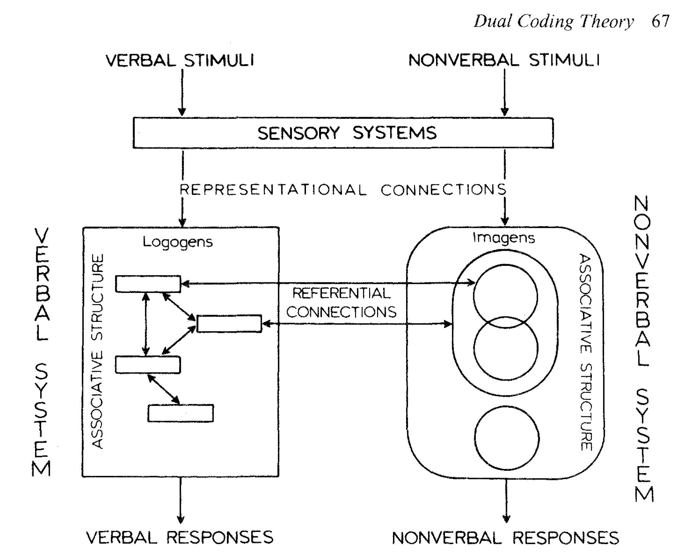
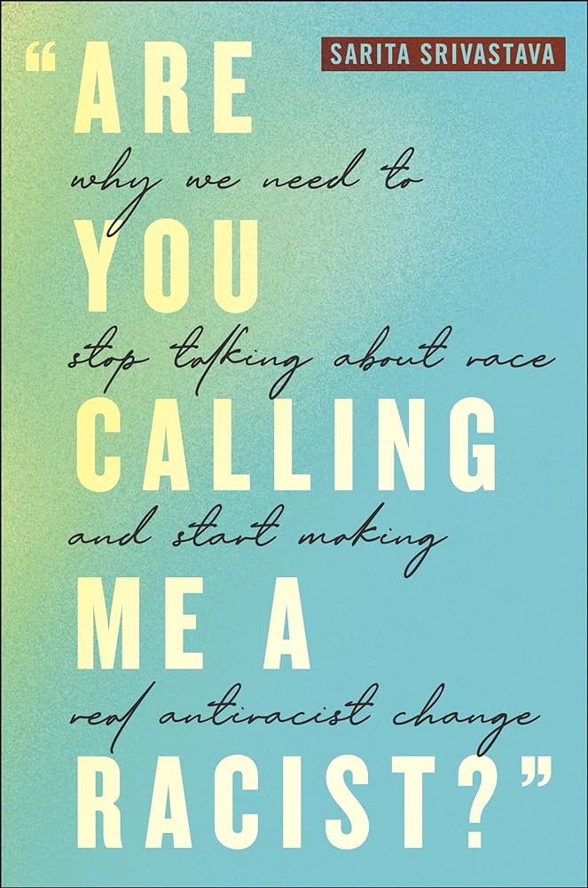

Week 14: AI, Freedom, and the Kindly Slavemaster
DSAN 5450: Data Ethics and Policy
Spring 2026, Georgetown University
Wednesday, April 22, 2026
A “General” Fairness Definition?
- May need to “descend” from 👆Platonic ideal fairness to 👇Aristotelian context-sensitive case-specific fairness 🤔
- (Hard enough to find “general” groupings in Canada, now do allocations of resources among them… and then the whole world)
- We saw this issue before, in different form! Rawls on “correct” ranking of rights
- [Rawls: No “correct” ordering; Different societies \(\leadsto\) different social value systems, power struggles \(\leadsto\) different orderings]

- [Me, I guess? 🙈: No “correct” fairness defn for racial discrimination; Different societies \(\leadsto\) different racial/caste/identity formations, power struggles \(\leadsto\) different fairness defns]
“Cool Theory, I Guess…”
- Less pessimistic result of pessimistic conjecture: Some hope from Fodor-Sperber model (disclaimer: also terrifying Minority Report-style dystopian possibilities)
- “Good luck measuring ideas inside of people’s heads… I’ll be over here measuring real things and doing real data science!” -My innumerable Wile E. Coyote-style opps


Specifically-Chosen Examples



With Great Privilege Comes Great Responsibility
What is the most damage I can do, given my biography, abilities, and commitments, to the racial order and rule of capital? (Joel Olson)

“Controlling for” Everything Besides Race

- Economist assertion: everything is “same” except for [name \(\leadsto\) race]
- Weird part of assertion: only true if the “everything” is stripped of context… But, stripped of context, how would we get [name \(\leadsto\) race] in the first place?
Age Discrimination?

Fair \(\iff\) [\(\Pr(\text{Admit Presley}_{12}) = \Pr(\text{Admit Presley}_{22})\)]?
- Root of issue: [BA Stats, UCLA, 3.7] has no “free-floating” meaning—it’s attached to a person \(\Rightarrow\) affected by/interpreted w.r.t. their “protected” characteristics
Opening A Big Can Of Worms
- Social interactions among \(t^e_0\), \(t^e_1\), \(t^e_2\)…

Opening A Big Can Of Worms
- Social interactions among \(t^e_0\), \(t^e_1\), \(t^e_2\)…
- Mediated by external things \(o^e_3\) to \(o^e_8\) (giving rise to patterns of interaction)…

Opening A Big Can Of Worms
- Social interactions among \(t^e_0\), \(t^e_1\), \(t^e_2\)…
- Mediated by external things \(o^e_3\) to \(o^e_8\) (giving rise to patterns of interaction)…
- Each person \(x\) forming their own internal representations \(\widetilde{t^x_0}\), \(\widetilde{t^x_1}\), \(\widetilde{t^x_2}\) of one another based on patterns of interaction, then
- Generalizing to an internal representation of a “type of person” \(\widetilde{t^x_9}\)…